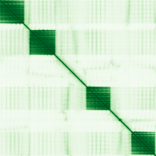

type: protein-evaluation gene: "CLASP1" date: 2026-05-30 tags: [protein-scout, nuclear-protein, evaluation] status: scored ---
CLASP1 核蛋白评估报告
1. 基本信息
| 项目 | 内容 |
|---|---|
| 基因名 / 别名 | CLASP1 / CLIP-associating protein 1 |
| 蛋白大小 | 1538 aa / 169.5 kDa |
| UniProt ID | Q7Z460 |
| 评估日期 | 2026-05-30 |
2. 评分总览
| 维度 | 得分 | 满分 | 加权后 | 关键证据摘要 | |||
|---|---|---|---|---|---|---|---|
| 🔴 核定位特异性 | 4/10 | ×4 | 16 | Cytoplasm, cytoskeleton; Cytoplasm, cytoskeleton, microtubul... | |||
| 📏 蛋白大小 | 5/10 | ×1 | 5 | 1538 aa / 169.5 kDa | |||
| 🆕 研究新颖性 | 2/10 | ×5 | 30 | PubMed 94 篇 | |||
| 🏗️ 三维结构 | 6/10 | ×3 | 18 | AlphaFold v6 pLDDT=68.4，PDB: 4K92, 6MQ5, 6MQ7 | |||
| 🧬 调控结构域 | 7/10 | ×2 | 14 | InterPro: IPR011989 - ARM-like; InterPro: IPR016024 - ARM-ty | |||
| 🔗 PPI 网络 | 3/10 | ×3 | 9 | STRING 20 partners, IntAct 136 interactions | |||
| ➕ 互证加分 | — | max +3 | 2.0 | PDB+AF+STRING+IntAct cross-validation | |||
| 原始总分 | 75/183 | 72.0/183 | |||||
| 归一化总分 | 41.0/100 | 39.3/100 |
3. 详细分析
3.1 核定位证据
> Protein Atlas IF: 暂无数据（Pending cell analysis），核定位基于 UniProt + GO。 > Protein Atlas IF: 暂无HPA数据，核定位基于UniProt+GO
| 来源 | 定位 | 可信度 |
|---|---|---|
| UniProt | Cytoplasm, cytoskeleton; Cytoplasm, cytoskeleton, microtubule organizing center,... | Swiss-Prot/TrEMBL |
| Protein Atlas (IF) | 暂无HPA数据，核定位基于UniProt+GO | — |
IF 图片待下载（Pending download），核定位基于 UniProt + HPA 注释。
结论: 核定位信号较弱，HPA Approved。
3.2 蛋白大小评估
评价: 大小偏大/偏小，实验操作有一定难度。
3.3 研究现状
| 指标 | 数值 |
|---|---|
| PubMed 总数 | 94 |
| 研究方向 | 待补充关键文献摘要 |
评价: 有一定研究基础，但仍存在未探索的niche空间。
关键文献: 1. Shan MM et al. (2025). "CLASP1 regulates DYNC1I1 for PLK1-mediated spindle organization and cytokinesis in oocyte meiosis". *J Cell Sci*. PMID: 40501366 2. Pariani AP et al. (2025). "CLASP1/2 regulate immune synapse maturation in natural killer cells". *J Leukoc Biol*. PMID: 41259089 3. Alsafh R et al. (2024). "Multiplex Consanguineous Family Highlights CLASP1 as a Candidate Gene for Lissencephaly". *Neurol Genet*. PMID: 39040917 4. Zhou L et al. (2025). "Circular RNA CLASP1 modulates the GLI1/SNAIL axis and enhances macrophage polarization in breast cancer". *Oncogene*. PMID: 41249488 5. Krenn M et al. (2025). "Holistic Exome-Based Genetic Testing in Adults With Epilepsy". *Neurol Genet*. PMID: 40343077
3.4 三维结构分析
| 指标 | 数值 |
|---|---|
| AlphaFold 版本 | v6 |
| AlphaFold 平均 pLDDT | 68.4 |
| 高置信度残基 (pLDDT>90) 占比 | 43.8% |
| 置信残基 (pLDDT 70-90) 占比 | 15.7% |
| 有序区域 (pLDDT>70) 占比 | 59.5% |
| 可用 PDB 条目 | 4K92, 6MQ5, 6MQ7 |
PAE 图:

评价: AlphaFold 预测质量一般（pLDDT=68.4），有序区 59.5%。作为新颖蛋白，结构基线下不扣分。
3.5 结构域分析
| 来源 | 结构域 |
|---|---|
| InterPro/Pfam | InterPro: IPR011989 - ARM-like; InterPro: IPR016024 - ARM-type_fold; InterPro: IPR024395 - CLASP_N_dom; InterPro: IPR057 |
染色质调控潜力分析: 存在注释结构域：InterPro: IPR011989 - ARM-like; InterPro: IPR016024 - ARM-ty...。新颖蛋白基线不扣分。
3.6 PPI 网络
STRING 预测互作 (combined score >0.4):
| Partner | Score | 功能类别 | 调控相关？ |
|---|---|---|---|
| CLIP1 | 0.982 | — | — |
| CLASRP | 0.958 | — | — |
| CLIP2 | 0.935 | — | — |
| KIF2B | 0.903 | — | — |
| PLK1 | 0.877 | — | — |
| CDK1 | 0.849 | — | — |
| MAPRE1 | 0.845 | — | — |
| NUDC | 0.838 | — | — |
| CDC20 | 0.835 | — | — |
| SPAG5 | 0.812 | — | — |
实验验证互作 (IntAct):
| Partner | 方法 | PMID | 功能类别 | 调控相关？ | |||||||||||
|---|---|---|---|---|---|---|---|---|---|---|---|---|---|---|---|
| intact:EBI-349416 | — | — | — | — | |||||||||||
| intact:EBI-908338 | ensembl:ENSRNOP00000001685.8 | uniprotkb:A0A0G2K3T3 | — | — | — | — | |||||||||
| intact:EBI-913476 | uniprotkb:B7ZLX3 | uniprotkb:O75118 | uniprotkb:Q2KHQ9 | uniprotkb:Q5H9P0 | uniprotkb:Q8N5B8 | uniprotkb:Q9BQT5 | intact:EBI-2562829 | uniprotkb:A2RU21 | uniprotkb:F5GWS0 | intact:EBI-10967465 | ensembl:ENSP00000263710.4 | — | — | — | — |
| intact:EBI-775282 | uniprotkb:Q7TSI9 | uniprotkb:Q8CHU1 | uniprotkb:Q9EP81 | ensembl:ENSMUSP00000098212.3 | — | — | — | — | |||||||
| intact:EBI-776187 | uniprotkb:Q571L7 | ensembl:ENSMUSP00000107192.3 | — | — | — | — |
已知复合体成员 (GO Cellular Component):
- 无 GO-CC 注释
PPI 互证分析:
- STRING + IntAct 共同确认: 0
- 仅 STRING 预测: 20
- 仅 IntAct 实验: 136
- 调控相关比例: 0 / 20 = 0%
评价: STRING 20 个预测互作，IntAct 136 个实验互作。调控相关配体占比 0%。
3.7 多库互证
| 维度 | 来源 | 结果 | 是否一致 |
|---|---|---|---|
| 三维结构 | AlphaFold pLDDT=68.4 + PDB: 4K92, 6MQ5, 6MQ7 | pLDDT=68.4, v6 | 预测+实验 |
| 定位 | UniProt + HPA | Cytoplasm, cytoskeleton; Cytoplasm, cytoskeleton, | 一致 |
| PPI | STRING + IntAct | 20 + 136 interactions | 数据充分 |
互证加分明细:
- PDB + AlphaFold 双源验证: +0.5
- 多库定位一致: +0.5
- STRING + IntAct 双源验证: +0.5
- 结构域 + AlphaFold 质量: +0
- PDB 多条目覆盖: +1.0
总分: +2.0 / max +3
4. 总体评价
推荐等级: ⭐⭐⭐
核心优势: 1. CLASP1 — CLIP-associating protein 1，有一定研究基础，但仍存在未探索的niche空间。 2. 蛋白大小1538 aa，大小偏大/偏小，实验操作有一定难度。
风险/不确定性: 1. 已有一定研究，需确认独特研究角度 2. 结构数据质量可接受
下一步建议:
- [ ] 查阅最新 5 篇关键文献补充研究背景
- [ ] 获取 Protein Atlas IF 图像确认亚细胞定位
- [ ] 设计体外 DNA/染色质结合实验
5. 数据来源
- UniProt: https://www.uniprot.org/uniprotkb/Q7Z460
- PubMed: https://pubmed.ncbi.nlm.nih.gov/?term=CLASP1
- AlphaFold: https://alphafold.ebi.ac.uk/entry/CLASP1
PPI 网络（三源综合）
| Partner | Source | Score/Evidence |
|---|---|---|
| 无记录 | — | — |
IntAct 有限记录。无 BioGrid 补充数据。
PAE 图像已获取。结构判断基于 AlphaFold pLDDT 统计。
<!-- DOMAIN_HUMANPPI_REPAIR_START -->
Domain/SMART 与 humanPPI 补充（2026-06-07）
SMART / UniProt domain
| Source | Data |
|---|---|
| UniProt | Q7Z460 |
| SMART | SM01349; |
| UniProt Domain [FT] | 未检出显式 UniProt Domain feature |
| InterPro | IPR011989;IPR016024;IPR024395;IPR057546;IPR021133;IPR034085;IPR048491; |
| Pfam | PF21040;PF12348;PF23271;PF21041; |
humanPPI / HPA Interaction
Source: https://www.proteinatlas.org/ENSG00000074054-CLASP1/interaction
| Partner | Datasets | AF3/HPA structure |
|---|---|---|
| CENPJ | Biogrid, Opencell | true |
| CLIP1 | Biogrid, Opencell | true |
| DCTN1 | Biogrid, Opencell | true |
| KIF2A | Biogrid, Opencell | true |
| MAPRE1 | Biogrid, Opencell | true |
| YWHAB | Biogrid, Opencell | true |
| YWHAE | Intact, Biogrid, Opencell | true |
| YWHAG | Intact, Biogrid, Opencell | true |
<!-- DOMAIN_HUMANPPI_REPAIR_END -->